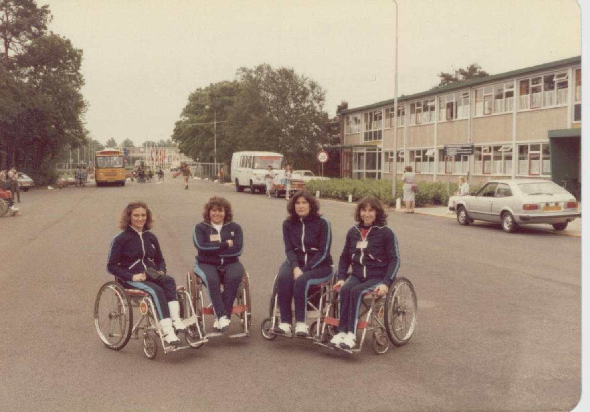

CRIDEL-CILSA-NACIONAL1993

RIZZOTO-GAZZOLA-VERON-CHARADIA-HOL1980

La historia del básquetbol en silla de ruedas, al igual que el deporte adaptado tiene un origen general. Y, claro, una génesis, también, en nuestro país. La historia del Movimiento Paralímpico se remonta a 1888, año en el que surgieron en Berlín los primeros clubes deportivos para personas sordas. Posteriormente, tras la Segunda Guerra Mundial, el Movimiento Paralímpico empezó a desarrollarse plenamente. El objetivo que se marcó pasaba por atender al gran número de veteranos de guerra y civiles que habían sido heridos durante el conflicto bélico. En 1944, a petición del gobierno del Reino Unido, el Doctor Sir Ludwig Guttmann abrió un centro para pacientes con lesiones de médula en el Hospital de Stoke Mandeville. Allí, lo que en un principio fueron deportes de rehabilitación evolucionaron y pasaron a tener un ánimo más recreativo para, posteriormente, convertirse en prácticas competitivas. Dentro de las disciplinas, que comenzaron a realizarse con un espíritu de rehabilitación, se encontraba el basquetbol, claro. Sin embargo, no fue hasta la mitad de la década del 50 que comenzó a tomar mayor fuerza en nuestro país. En el verano de 1955/56 nuestro país sufrió la epidemia de poliomielitis más grave de su historia. Una sociedad entera comenzó a movilizarse para rehabilitar a los cientos de jóvenes con secuelas de esta enfermedad. Llegaron al país terapistas ocupacionales inglesas (especialidad que no existía aquí) para formar profesionales en ese campo. Y fue allí, a partir del conocimiento de los profesionales de la salud, que llegó la noticia a esta parte del mundo: en Inglaterra, el profesor Guttmann avanzaba cada vez más en su trabajó, no sólo en la rehabilitación de los veteranos, sino que, además, ya tenía un objetivo de avanzada para su época. La de integrar a los pacientes a la sociedad como miembros útiles y no como “veteranos”, siempre a través del deporte. En Argentina, la noticia de la práctica de diferentes disciplinas deportivas para personas con discapacidad motivó a muchos profesionales y voluntarios, que comenzaron a trabajar en ello. En un primer momento con los internos del Instituto Nacional de Rehabilitación, hoy IREP. En febrero de 1957, en el gimnasio de la entonces Comisión Nacional Permanente para la Rehabilitación de los Lisiados, se jugó el primer partido de básquet en silla de ruedas de la historia en nuestro país.